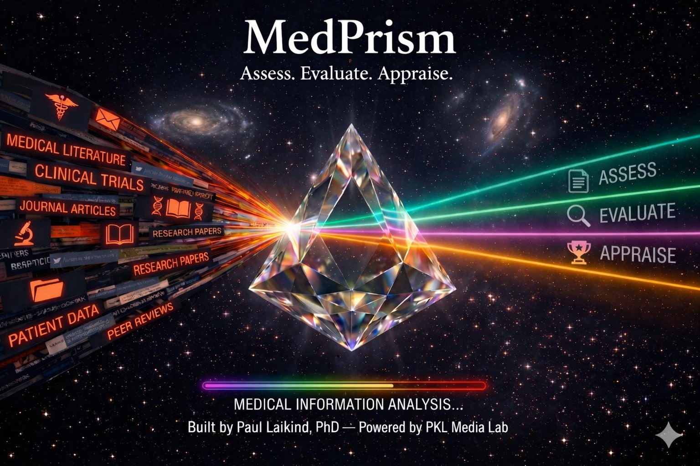

MedPrism analyzes published research papers for methodology, transparency, and publication integrity signals — helping clinicians and researchers quickly assess whether a paper warrants closer scrutiny before applying its findings.

Multiple comparisons without correction, post-hoc analyses presented as pre-specified, borderline p-values, effect size plausibility, and unusual statistical patterns that may indicate data issues.
Selective outcome reporting, outcome switching between registration and publication, inconsistencies between methods and results sections, and overclaiming relative to study design.
Retraction history, journal credibility screening, predatory publisher detection, DOI verification, and cross-referencing against external integrity databases.
Conflict of interest statements, data availability, funding disclosure, and trial or study pre-registration — assessed as informational disclosures, not as red flags.
An assessment gauge and one of three verdicts — Read Carefully, Read Critically, or Use With Caution.
A concise summary of the paper's integrity profile written for a clinical audience — not a technical report.
Each flag includes severity, category, explanation, and a supporting excerpt from the paper itself.
Structured assessment of COI statements, data availability, funding disclosure, and pre-registration.
Retraction Watch, ClinicalTrials.gov, DOI verification, DOAJ status, and predatory publisher screening.
Complete detailed analysis in a new tab — print or save as PDF directly from the browser.
Click the MedPrism toolbar button on any research article page. The side panel opens alongside the paper — MedPrism detects the article automatically and retrieves the full text where available. Works on PubMed, Cell Press, PLOS, bioRxiv, medRxiv, BMJ, Nature, and most journal sites.
The extension requires the same access code as the web app. Request a code by email — access is free of charge.
📧 Request Access CodeThe web app accepts PDF uploads (including supplementary materials), direct text paste, and URL / PMID / DOI entry. For paywalled articles or when the extension cannot extract full text, download the PDF and upload it directly.
MedPrism is currently in private beta. Access is free of charge — email to request an invitation code for the web app and Chrome extension.
Open Web App → 📧 Request Access Code